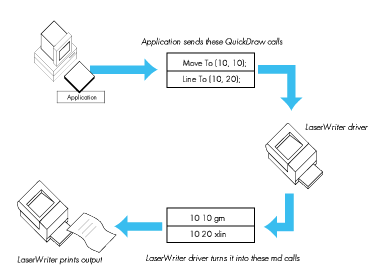

Developers are discovering the advantages of using PostScript ® dictionaries in
applications, but along with the advantages come some perils. One peril awaits if you
download a dictionary using PostScriptHandle. Another can trip you up after
downloading a dictionary if you then download a font using the SetFont procedure I
described in develop, Issue 1. How to avoid these perils? Read on to learn some tricks
for dicts in picts.
More and more developers are beginning to use direct PostScript code in their
applications. In my "Perils of PostScript" article in develop, Issue 1, I addressed a
couple of problems that arise when you use PostScript code to print documents. In this
sequel, we'll look at some problems you will encounter if you attempt to use
PostScript dictionaries in your applications.
A PostScript dictionary is a collection of predefined variables and/or procedures.
Using a PostScript dictionary can significantly reduce the size of the PostScript code
generated by your application and make it more efficient. For instance, consider a
large PostScript file in which the operatorcurrentpoint is used frequently. You can
define in your dictionary a PostScript procedure called cp that makes a call to the
currentpoint operator. You can then replace currentpoint with cp throughout the
file, thus reducing its size. Similarly, by defining a PostScript procedure to represent
a series of operators, you can express a compound operation much more efficiently.
And storing procedures in a dictionary that you create can also prevent you from
inadvertently redefining something that has already been defined.
One great example of a PostScript dictionary is the one used by the LaserWriter ®
driver, variously called LaserPrep (after the file it resides in, at least until System
7), AppleDict (the Apple name for it), and good ol' md (the PostScript name for it, and
the one I prefer to use). The LaserWriter driver generally uses one or more md
routines to perform a particular QuickDraw operation. (See the sidebar on the next
page for a review of how the LaserWriter driver works.) For example, a call to the
QuickDraw CopyBits routine is translated by the driver into a call to the db or
cdb operators stored in md. As another example, during font downloading the
LaserWriter driver uses bn and bu , both stored in md, to call save and
restore ( bn calls save and bu calls restore).If you want to record a piece of
PostScript code that references procedures contained in a dictionary, you must also
record the dictionary. I describe how to download a dictionary, and how to avoid the
pitfalls involved, in the next section.
Once your dictionary has been downloaded, you should be able to continue to reference
it until the end of the job. But alas, this is not so, at least until the new printing
architecture ships sometime after System 7. Under the current architecture, font
downloading interferes with PostScript dictionaries. I discuss this problem and how to
get around it under "The Perils of Font Downloading."
One of the easiest methods for downloading a PostScript dictionary is by using the
PostScriptHandle picture comment. You can use this comment to download directly
to the LaserWriter a block of PostScript code stored in a handle. (See Technical Note
#91, Optimizing for the LaserWriter--PicComments, for more information.) When
you use the PostScriptHandle comment, you must insert the PostScriptBegin
and PostScriptEndpicture comments around the block of PostScript code you are
trying to download, like this:
PicComment(PostScriptBegin, 0, NIL); (************************************************************) (*** Your PostScript representation of document goes here.***) (************************************************************) PicComment(PostScriptHandle, size, handle); (***********************************************************) (*** Your QuickDraw representation of document goes here.***) (***********************************************************) PicComment(PostScriptEnd, 0, NIL);
As described in my first article, the PostScriptBegin/Endcomments are markers
that ensure that the right piece of code will execute on the right device. When the
LaserWriter driver sees PostScriptBegin, it ignores all QuickDraw drawing calls
and just executes picture comments. When a PostScriptEndis received, the
LaserWriter driver will once again interpret QuickDraw calls. So when printing to a
LaserWriter printer, only the picture comments are executed, while the QuickDraw
code between PostScriptBeginand PostScriptEndis ignored. But
PostScriptBegin and PostScriptEnd also save and restore at least part of the
state of the device, which can cause problems for your dictionary. To avoid this, you
should use the picture comment PostScriptBeginNoSave (comment kind = 196) to
prevent the save and restore from occurring, like this:
(***************************************************) (*** Your definition of the dictionary goes here.***) (***************************************************) PicComment(PostScriptBeginNoSave, 0, NIL); PicComment(PostScriptHandle, dictsize, dicthandle); PicComment(PostScriptEnd, 0, NIL); (**********************************) (*** Now you send the document. ***) (**********************************) PicComment(PostScriptBegin, 0 NIL); (************************************************************) (*** Your PostScript representation of document goes here.***) (************************************************************) PicComment(PostScriptHandle, size, handle); (***********************************************************) (*** Your QuickDraw representation of document goes here.***) (***********************************************************) PicComment(PostScriptEnd, 0, NIL);
If you don't need to export your dictionary into picture files, you can get the
LaserWriter driver to auto-download your dictionary by keeping the dictionary code
in a PREC(103) resource. After the LaserWriter has saved its state, it does a blind
GetResource (that is, from any open resource file) on PREC(103). If one is found, it
is downloaded to the printer after the md dictionary, and before the job. You can use
this method of downloading for dictionaries that are used only to contain state
information about the current job. (When a graphic is copied onto the clipboard, only
the state information, not the entire dictionary, is required for the code to execute.)
However, use of the PREC(103) resource does have some limitations. It only works at
print time, and there can be only one. That is, the LaserWriter driver does not
attempt to download all the PREC(103) resources in all the open resource files. The
first one it finds wins. (This method of downloading dictionaries is documented in
Technical Note #192, Surprises in LaserWriter 5.2 and Newer.)
In my "Perils of PostScript" article in Issue 1 of develop, I showed a small procedure
called SetFont that downloaded a font using QuickDraw, while maintaining the ability
to reference that font using PostScript. The problem with that method is that the
process of font downloading executes the PostScript restore operator. This operator
restores the state of the printer to a state that was saved before your dictionary was
defined. Because of this, any reference to your dictionary is lost.
Another way to understand what happens in this case is to look at what the LaserWriter
driver does during printing. At the start of a print job, the LaserWriter driver
configures the LaserWriter's graphics state to look more like QuickDraw. This
includes moving the origin (0,0) from the bottom left (PostScript style) to the top
left (QuickDraw style), and setting the default resolution to 72 dpi. After the driver
has configured the printer, it performs a save, which saves the complete state of the
device. The driver then begins downloading the rest of the job, containing the
PostScript code generated by the LaserWriter as well as any additional PostScript code
sent by the application.
The LaserWriter driver fully restores the state of the device, by executing the
PostScript restoreoperator, before downloading a font. During font downloading, the
characters of the font are actually defined, sometimes using normal PostScript
drawing operators. Because of this, the LaserWriter driver restores the state of the
printer before defining the characters. Once the characters have been defined, the state
is saved again. This way, the LaserWriter driver can assume it knows the state of the
device. Since the state saved by the LaserWriter driver does not contain any of the
symbols defined by the application, all of them are lost after any attempt to download a
font.
WHICH WAY OUT?
Now that we understand the problem, let's discuss potential solutions. The restore
operator affects everything that has changed except two areas: some of the PostScript
stacks (specifically the operand, dict, and execution stacks), and the contents of
PostScript strings. This suggests that to save small units of information, you can
simply push them onto the stack, or convert them and store them as PostScript
strings.
Unfortunately, it's not quite that easy.
PostScript makes a distinction between simple and composite objects. Simple objects
(like numerical values and booleans) contain their value within the object. Composite
objects (like strings, procedures, and dictionaries) contain only a pointer to the real
data, which is stored elsewhere in PostScript Virtual Memory. Simple objects on the
stack are indeed preserved across a restore, but if there are composite objects on
the stack that are new (that is, newer than the state being restored), an
invalidrestore error is generated. If your dictionary only contains simple objects,
then you can indeed push each of the variables defined in the dictionary onto the stack
separately and rebuild the dictionary after the restore. The overhead here is
obviously enormous, though, and most useful dictionaries contain procedures and/or
strings, rendering this technique useless.
In the case of strings being preserved across a restore, let me quote from the
PostScript Language Reference Manual , p. 44: "In the current PostScript design,
restore actually does not undo changes made to the elements of strings. We consider
this behavior to be a defect, and do not recommend that PostScript programs take
advantage of it." Beyond this easily ignored admonishment, though, is another problem.
The strings in question must be preexisting: strings you create just before the
restore will, of course, be destroyed by the restore, or, if they are on the stack,
will cause an error. You could probably find some scratch strings in one of the
standard dictionaries to use, but this is not recommended, for obvious reasons.
AN END TO BN AND BU
Another way to solve the problem would be to redefine save and restore to not do
anything. This way, font downloading would not cause the state to be restored. This
would make the application developer responsible for preserving the state, which is
easily done using other PostScript operators. But unfortunately, the definitions of
save and restore cannot be changed without exiting the server loop. That is, you
cannot override their definitions from within a job. Because of this, you have to fall
back on plan B: override the operators that call save and restore. In the case of
font downloading, these operators are bn and bu, as mentioned earlier.
This method is the most widely used solution to our problem, has the fewest
limitations, and is the method recommended here. Please note, however, that tinkering
with md operators outside of this specific use is strongly discouraged. (See the sidebar
on the next page.)
The main job of bu and bn is to preserve the state of the PostScript device. As long
as your PostScript code preserves the state, these calls aren't even required. In the
fragment that follows, we first create our own dictionary, called mydict, with room
for ten symbols, although we don't define them all. Next we define killbu. killbu is
responsible for first saving the old definition of the buroutine, and then setting its
value to the empty procedure ( {}), which does nothing. The original definition of bu
is simply pushed onto the stack. Next we write a routine restorebu, to restore the
definition of bu when we are through. This routine is responsible for popping the
original value off the stack and storing it back into the bu symbol; it assumes that
the definition of bu is on the top of the stack. Then we define two similar routines,
killbn and restorebn, which take care of the bn operator. Finally, we define a fun
little routine to call to make sure our dictionary is actually being preserved after font
downloading. We call this one titleshow. So now we have a dictionary, all ready to
use.
SendPostScript('/mydict 10 dict def');
SendPostScript('mydict begin');
SendPostScript('/killbu {//md /bu get //md /bu {} put} def');
SendPostScript('/restorebu {//md exch /bu exch put} def');
SendPostScript('/killbn {//md /bn get //md /bn {} put} def');
SendPostScript('/restorebn {//md exch /bn exch put} def');
SendPostScript('/titleshow {dup gsave');
SendPostScript('currentscreen 3 -1 roll pop 120 3 1 roll setscreen');
SendPostScript('.5 setgray show grestore true charpath gsave');
SendPostScript('1 setlinewidth 0 setgray stroke grestore');
SendPostScript('.5 setlinewidth 1 setgray stroke }def');
SendPostScript('end');
Okay, now that we have the routines for killing bu and bn, we need to call them. It's
very important at this point to check for their existence before attempting to alter
their definitions. This is because, as mentioned earlier, the new printing architecture
that will ship sometime after System 7 will handle font downloading differently. The
bu and bn operators will no longer exist; in fact, it's not clear that the md
dictionary will still exist. The following PostScript commands check for the existence
of both the dictionary and the symbol. If they don't exist, our code assumes it is
running under the new printing architecture, and does nothing to insulate the
dictionary. The code fragment executes fine on LaserWriter drivers up to and including
System 7.0. It has also been tested in both foreground and background. Considering the
future of bn and bu, it is very likely that this code will continue to work even under
the new printing architecture. Here, then, is the code to check for and kill bn and
bu:
SendPostScript('mydict begin');
SendPostScript('//md /bu known {killbu} if');
SendPostScript('//md /bn known {killbn} if');
SendPostScript('end');
Pretty straightforward: if the routine exists, call the correct routine to kill it. The
most important thing to note here is the order of the routines. Since killbuand
killbnpush things onto the stack, restorebuand restorebnmust be called in
opposite order to get the correct results. So after the job is finished, we call:
SendPostScript('mydict begin');
SendPostScript('//md /bn known {restorebn} if');
SendPostScript('//md /bu known {restorebu} if');
SendPostScript('end');
PostScript dictionaries are useful because they can significantly reduce the size of the
PostScript code generated by your application, and can be exported into pictures.
Perhaps the easiest way to record PostScript into a picture is by using the
PostScriptHandlepicture comment. In this case, remember to use the PostScript
BeginNoSave comment to prevent PostScriptBegin and PostScriptEnd from
saving and restoring at least part of the state of the device, which can cause problems
for your dictionary. To prevent font downloading from interfering with your
PostScript dictionaries, you can override bn and bu, the PostScript operators that
call save and restore. Outside of this solution, you should absolutely avoid using
md operators.
The code included in the Perils of PS II folder on the Developer Essentials disc is
basically the same code that has been shown here, rolled into an application shell that
opens and initializes the Printing Manager. Also included is the definition of the
SendPostScriptprocedure referenced in this article.
The LaserWriter driver is a complex piece of software that handles communications
between an application and the LaserWriter printer. To print a document, the
application opens the Printing Manager, which in turn loads and initializes the
LaserWriter driver. The application then makes standard QuickDraw calls similar to
those used to render the document on the screen. The LaserWriter driver intercepts
these calls and converts them into the equivalent PostScript code for rendering the
document on the LaserWriter printer.
(See Figure 1.) In some cases, one QuickDraw operation translates into one PostScript
operation, but more frequently, the QuickDraw operation translates into several
PostScript operations. To abbreviate these operations, the LaserWriter driver stores
them as procedures in a PostScript dictionary.
When the LaserWriter driver first connects to the LaserWriter printer, it checks to
see if its dictionary exists and if the version of the dictionary matches the version of
the driver being used. If not, it downloads the correct dictionary before proceeding.
(This is what the message "initializing printer" means when you print for the first
time after turning on the printer.)
Once the correct dictionary is in place, the job of translation becomes much easier.
Each QuickDraw operation now becomes one line of PostScript code, referencing a
procedure defined by the dictionary. Complex QuickDraw operations (like font
downloading) still require many lines of PostScript code, but in general, the
translation is one for one. Since the QuickDraw code is translated rather than
rendered, the LaserWriter driver doesn't need to spool the data to disk. Instead, each
operation is translated and sent to the printer as it is received.

Figure 1 How the LaserWriter Driver Works
Many developers have started to call md routines from within the PostScript code
generated by their applications. This is dangerous, for a number of reasons.
The first is that the md dictionary is defined and maintained by the LaserWriter
driver. This means that it is always subject to change, and code that depends on the md
dictionary must be version dependent. This is possible, but far from elegant.
Another problem with using md operators is that they may not work the same way on
all devices. Remember that the LaserWriter driver is used to drive a lot more devices
than just an Apple LaserWriter.
Use of md operators has already led to compatibility problems with major
applications, and most developers have realized the danger in using them. The easiest
way to avoid problems with these routines is to not call them. If you really need the
functionality of a particular md operator, simply redefine it in your own dictionary.
Using tools like LaserTalk (formerly from Emerald City Software, now from Adobe),
you can "disassemble" md operators back to their PostScript primitives. You can then
redefine them using a different name in your own dictionary. Now you have a routine
that does exactly what the md routine did, but you remain in control of its definition.
Most of the md operators are very small, so the storage penalty of redefining them in
your own dictionary is minimal.
Now that I've warned you, I'm going to show you how to tinker with two operators
stored in md: bn and bu. All routines, including these two, are subject to change; by
special arrangement with engineering, bn and bu will change in a compatible way, but
this isnot true for any of the other routines defined in md. This article shows a specific
use of bn and bu, and checks for their existence before attempting to access them. This
is not meant to endorse other uses of these or any other md routines.
SCOTT "ZZ" ZIMMERMAN is a DTS printing guru. After two and a half years at
Apple he says he's particularly impressed with the strictly enforced dress code. In his
spare time he sails, scuba dives for lobsters, and plays the piano, guitar, and
saxophone. Zz has a penchant for pets. His doorway is adorned by a melted gummy rat,
a good luck charm left over from his Intel days. At home, atop his monitor is perched a
rare Asian black scorpion (behind glass, we hope). His other cuddly pets include two
geckos and a lovable iguana. *
The definitive references on the PostScript language are the PostScript Language
Reference Manual (Addison- Wesley, 1985, available from APDA--#T0182LL/A),
the PostScript Language Tutorial and Cookbook (Addison-Wesley, 1985), and
PostScript Language Program Design (Addison-Wesley, 1988). *
Thanks to Our Technical Reviewers Pete "Luke" Alexander, Jay Patel, David
Williams*